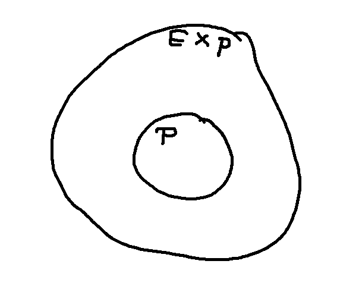
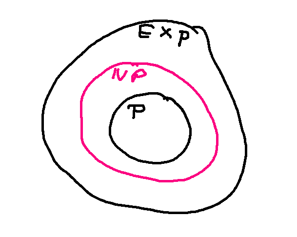
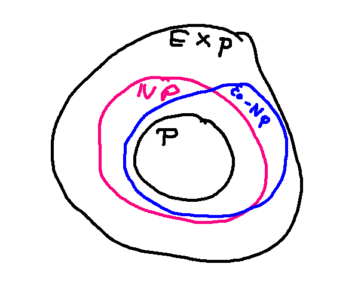

Many useful problems take polynomial time to solve. "Polynomial time" includes running times whose dominant term is a polynomial of any order, even nasty ones like \(O(n^{47})\), and any functions that are smaller than a polynomial, e.g. \(O(n\log n)\). So P, all polynomial algorithms, includes most of the algorithms you've seen and will see in coding classes.
Another easily-described class of problems can be solved in exponential time. This group EXP includes everything in P, and then some other problems.

In between these is a third class of problems NP, which can be done in exponential time but we're not sure whether they really require exponential time or can actually be done in polynomial time.

There are a few types of algorithms that take more than exponential time, but we're not going to talk about those.
Some problems are known to require exponential time. For example, the structure of the Towers of Hanoi problem forces any solution to this form:

The big disk can only be moved when it's the only thing on its peg, and it must move to an empty peg. So the only way to move the stack is to get everything off the big disk, then move the big disk, then move the rest of the stack. That's what our pseudocode does. And we end up with this recursive running time function, whose closed form is \(O(2^n)\).
T(1) = c
T(n) = 2T(n-1) + d
Some algorithms take exponential time because their output is exponential in size. For example, consider the problem of producing all parse trees for a sentence. Consider a sentences like this one:
I saw a unicorn in the shed by the apple tree with a red hat.
This contains three prepositional phrases:
I saw a unicorn [in the shed] [by the apple tree] [with a red hat].
Each prepositional phrase could, in principle, modify any of the previous nouns. So if we consider "with a red hat," the hat might be on the unicorn, or the shed, or the apple tree. This sort of sentence is rare in conversational speech, but happens rather often in written news stories. If a sentence like this has n prepositional phrases, and each one has at least two nouns it could modify, then the number of parse trees is at least \(O(2^n)\).
People and computer understanding systems actually use more efficient methods. So we use commonsense knowledge to narrow down the possibilities as we build up a parse tree. For example, sheds don't normally wear red hats. So an actual exponential running time would be for a theoretician's algorithm that was specifically required to produce all the possibilities.
Let's look briefly at the theoretical definition of NP.
First, these complexity classes (P, NP, EXP) technically contain only "decision problems." A decision problem is a problem where you are given some input and asked to produce a yes/no answer. Informally, people extend this idea to other sorts of problems, because an algorithm that delivers more interesting answer (e.g. the chromatic number of a graph) can typically be built on top of an algorithm for the corresponding decision problem.
Second, a decision problem is in NP if we can provide a succinct (polynomial-time) justification of a "yes" answer.
Graph coloring is a typical example of a problem in NP. First, let's make it into a decision problem:
Can graph G be k-colored?
n is the number of nodes in the graph.
We can determine the chromatic number of a graph by asking this question repeatedly for different values of k. (Notice that the chromatic number is between 1 and the number of nodes.)
A "yes" answer to this question is easy to justify: we show a picture of the graph colored with k colors. The reader can easily verify that adjacent nodes always have different colors.
A "no" answer is much harder to justify. Sometimes we can find a special graph or a simple approach to systematically searching. But the backup plan is to generate all \(k^n\) assignments of colors to nodes and check each one to see if it contains a pair of adjacent nodes with the same color.
This doesn't imply that a "yes" answer is easy to find. We might have to do a systematic search to find the coloring, when one exists. A "yes" answer is just easy to justify once we've found it.
For many reasonable graphs, you can quickly find the chromatic number. This is typical of problems in NP. There are often useful practical algorithms that work in many situations, or for certain applications. The difficulty lies in building a fully-general algorithm that can handle any input graph quickly.
Two other standard examples of NP problems are Logic Satisifiability (SAT) and the very closely problem of Circuit Safety. A satisfiability algorithm is given a logical expression and must decide whether there is an assignment of true and false to the input variables that will make the whole expression true. For example, perhaps we set up a number of rules for characters in our video game such as
If Fred is an orc, then he is green.
If Fred is tall and not hairy, then he is an elf.
We might want to know whether this set of rules is consistent, in the sense that we can give Fred a set of attributes that satisfies all the rules.
If we have a set of true/false values that makes the expression true, then we can easily convince you that it works. So a "yes" answer is easy to justify, but a "no" answer seems to require showing that we searched all exponentially many assignments.
The circuit safety problem is given an electronic circuit and asked to verify that a certain set of output values is impossible. For example, suppose that we are designing the controller for the traffic lights at an intersection. We need to ensure that there is no set of sensor values that could cause it to give east-west traffic a green light at the same time as the north-south traffic.
For circuit safety, the easy answer is "no." If the circuit is unsafe, we can demonstrate this by showing a set of inputs that produce the unwanted configuration of output values. So the roles of "yes" and "no" are flipped. Problems like this are in co-NP. So our Venn diagram actually looks like this:

Graph coloring and Satisfiability are examples of "NP Complete" problems. If a problem is NP-complete, then a polynomial-time solution for that problem would imply a polynomial-time solution for everything in NP. That is, NP and P would be equal.
The key theoretical result is the Cook-Levin theorem (from 1971). It showed that we could use logical expressions to simulate any problem in NP. After that, researchers have shown how to simulate logical expression satisfiability using the machinery from other problems, e.g. graphs and how to color them. This has created a large set of problems known to be NP complete.
Other NP complete problems include:
Marker making, which we saw earlier in the term, is a version of bin packing.
An interesting property of NP complete problems is that they remain NP complete even when drastically simplified. So even the 1D version of bin-packing is NP complete. Graph coloring is NP complete as long as the number of colors is at least 3. Logic satisfiability is NP complete even when we restrict the formulas that are in 3CNF form:
It is widely suspected that NP complete problems require exponential time. However, this has not been proved and it's still possible that there is some clever way to solve them in polynomial time.
The future seems to lie in approximation algorithms and algorithms that leverage the constraints of a specific application rather than solving the general problem. For example, register allocation in a compiler is a type of graph coloring problem. Practical algorithms for allocating registers exploit the ways in which code typically uses variables, as well as the fact that we now have a supply of registers that's generous compared to what the code actually needs.